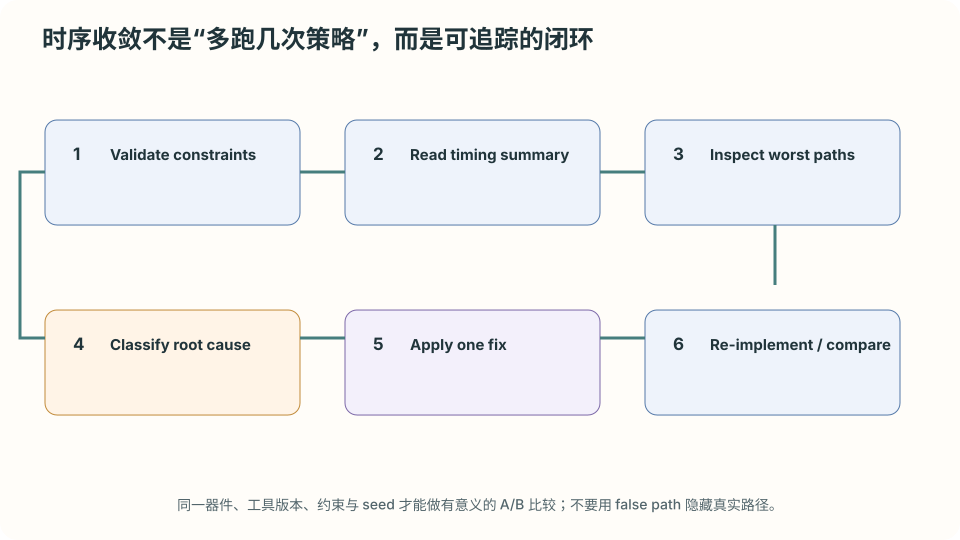
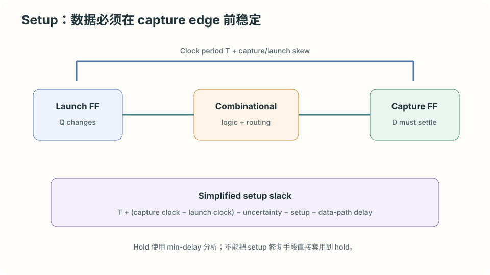
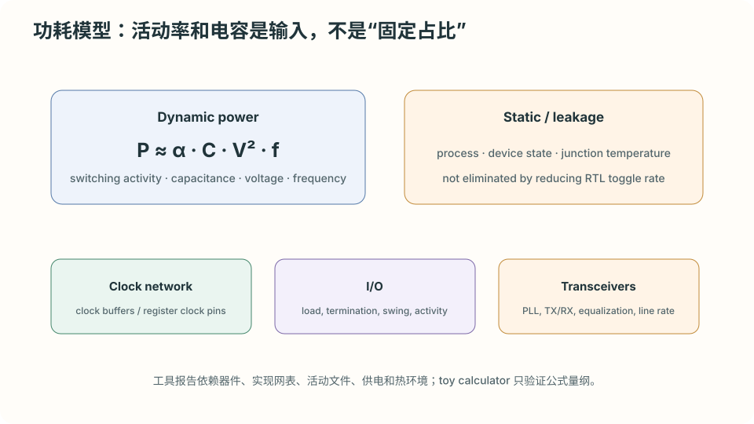

FPGA 时序收敛与功耗优化：从 STA 报告到可验证的修复闭环
准确理解 Setup/Hold、WNS/TNS、关键路径、CDC 例外和动态功耗模型，建立基于实现报告而非经验数字的时序与功耗优化流程。
01 / 时序收敛从约束正确开始，而不是从优化策略开始
RTL 仿真回答逻辑行为是否符合预期；静态时序分析（STA）回答在指定时钟、I/O 延迟、uncertainty 和器件模型下，数据是否能在要求的时间到达。一个功能正确的设计仍可能无法达到目标时钟频率；一个“Timing PASS”的报告也可能因为约束缺失而没有覆盖所有真实路径。

在 Vivado 中，report_timing_summary 可以查看时序摘要，report_timing 可检查具体路径。应先确认时钟是否创建、generated clock 是否正确、输入/输出延迟是否合理、时钟组和例外是否有依据、是否存在 unconstrained paths。AMD UG906 将 Timing Summary 和 Timing Closure Reports 作为实现分析的重要入口。
WNS（Worst Negative Slack）描述最差路径的 slack；TNS（Total Negative Slack）汇总负 slack 的影响范围。正 WNS 只说明已分析的路径没有负 slack，不代表所有路径都被正确约束，也不代表 CDC、异步复位释放、板级信号完整性和功耗已经签核。
02 / 读懂 Setup 与 Hold：路径由数据和时钟共同决定

对于简化的同频寄存器到寄存器 setup 路径，可写成：
正 capture-minus-launch skew 通常有利于 setup，但可能使 hold 更难；因此不能只看 data path。Hold 检查使用最小延迟路径和 capture/launch 时钟关系，修 setup 的方法（例如增加流水级或缩短组合逻辑）不一定修复 hold，反而可能让 hold 更差。
本仓库的 timing_power_budget.py 提供简化寄存器到寄存器算术：输入 period、data-path delay、uncertainty、setup 和 capture skew，计算一个教学 slack。它没有建模 clock latency、generated clock、multicycle、I/O delay、min-delay、OCV、route parasitics 或具体器件，因此不能替代 Vivado TimeQuest 等 STA 工具。
python3 scripts/timing_power_budget.py timing \
--period-ns 5.0 --data-path-ns 4.0 \
--uncertainty-ns 0.2 --setup-ns 0.1 \
--capture-skew-ns 0.1
# setup_slack_ns: 0.80000003 / 关键路径修复：先分类，再选择 RTL 或物理手段
时序报告中的路径延迟可分解为 cell delay 与 net delay。若 cell delay 占主导，检查组合逻辑结构、运算宽度、优先级链、乘法/比较器和 mux 层级；若 net delay 占主导，检查高扇出控制信号、逻辑分布、跨区域连线和拥塞。不要用“超过 10 级 LUT 就一定要流水线”这类固定阈值；器件 LUT 架构、逻辑功能、布线和目标周期都不同。
常见 RTL 修复包括：增加流水级、平衡组合运算、减少无谓的数据位宽、拆分高扇出控制、让数据/valid/ready 同步经过流水级。插入流水级会改变延迟与状态对齐；对于 AXI-Stream 或 ready/valid 设计，必须同步处理 backpressure、valid、last 和 sideband 信号，不能只给算术结果加寄存器。
物理优化（例如工具提供的 phys-opt、区域约束或寄存器复制）应在看过路径和拥塞报告后使用。Pblock/LOC 等约束会限制布局器自由度，可能改善局部布线，也可能造成拥塞或难以收敛。任何优化都应保持同一 part、工具版本、约束、seed 和实现阶段，再比较报告。
04 / 时钟与 CDC：不要用普通逻辑门随手门控时钟
如果模块只需在某些周期更新寄存器，优先使用同步 clock enable：
always @(posedge clk) begin
if (!rst_n)
state <= IDLE;
else if (ce)
state <= next_state;
end不要直接用 LUT 与门把 clk 和 enable 相与来构造新时钟；enable 在时钟高电平变化可能产生窄脉冲，且普通逻辑布线不具备专用时钟网络的偏斜保证。若设计确实需要时钟门控，应使用目标器件的专用 clock buffer enable 或厂商推荐时钟原语，并正确约束生成时钟。AMD UG949 明确建议使用专用时钟缓冲器的 CE 端口，而不是用 LUT 逻辑门控时钟。
跨时钟域路径不能通过“把 STA 报告隐藏起来”来解决。对单 bit level 使用同步器；事件用 toggle/握手；多 bit 数据用异步 FIFO 或有协议保证的数据采样方案。SDC/XDC 的 false path / asynchronous clock group 必须只覆盖经过 CDC 设计的异步路径，并同时检查同步器结构和约束覆盖。
05 / 功耗优化：动态功耗不是一个固定百分比

常用的一阶动态功耗模型是 Pdynamic ≈ α · C · V² · f。其中 α 表示开关活动率（本文脚本将它定义为每周期平均 0→1 充电转换比例），C 是有效负载电容，V 是电压，f 是时钟频率。降低无意义翻转、减少高扇出切换、让无用数据路径保持稳定、合理使用 clock enable，都可能降低动态功耗。
但总功耗不只包括这一个公式。还要考虑器件静态漏电、时钟网络、I/O 负载与终端、高速收发器、PLL、片上存储器和外部电源转换。不同 FPGA 家族、工艺、温度、供电电压和工作模式差异很大，因此不能把“动态 60–80%、静态 20–40%”写成通用比例。
AMD UG906/UG907 的 power analysis 使用实现网表、器件工作条件和 switching activity；仿真活动文件（如 SAIF）可帮助改善活动率输入。实际项目应在目标器件上设置温度、电压、散热条件和真实活动，再使用厂商功耗工具分析。report_power 的估算也不是电源轨实测。
本仓库的教学脚本可计算一个假设活动率下的动态功耗量纲：
python3 scripts/timing_power_budget.py power \
--activity 0.2 --capacitance-pf 100 \
--voltage-v 0.9 --frequency-mhz 100
# dynamic_power_mw: 1.620000此结果只验证公式和单位，不代表任何 FPGA 器件的实际功耗。
06 / 优化闭环与签核：保留证据，不隐藏违例
- 保存 baseline：RTL commit、part、工具版本、约束、实现 seed、时序和功耗报告。
- 检查约束完整性：主时钟、generated clocks、I/O delay、时钟组、exceptions、unconstrained paths。
- 选最差路径，阅读完整 path detail，区分 cell、net、clock path 和逻辑功能。
- 一次只改一个主要变量，重新实现并比较 WNS/TNS、hold、utilization、拥塞和功耗。
- 对所有例外约束写明原因、覆盖路径和 CDC 设计证据。
- 在 production build 中移除临时 debug logic，并重新完成 timing/power sign-off。